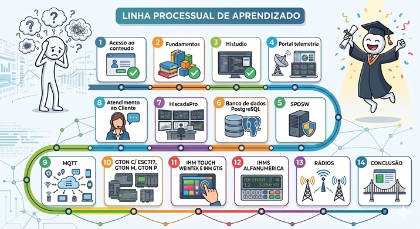

Bem-vindo à jornada de formação do suporte técnico da HI Tecnologia. Nosso propósito é garantir que cada profissional esteja plenamente capacitado para configurar, programar e integrar todo o ecossistema tecnológico da HI Tecnologia com excelência e eficiência.
Seja bem-vindo ao nosso departamento! Aqui, você fará parte de uma equipe que passou por uma incrível jornada de evolução. O departamento, que começou como uma função dentro da engenharia, tornou-se um setor independente, totalmente dedicado à experiência do cliente.
Superando desafios iniciais, consolidamos uma cultura
de excelência que hoje é um dos grandes diferenciais
competitivos da empresa.
Importante: Após assistir aos vídeos iniciais, você deverá apresentar à sala o que compreendeu sobre o legado do suporte.
Estamos ansiosos para contar com você nessa
trajetória de sucesso!
Prepare-se para iniciar uma jornada transformadora em sua formação técnica! Aproveite cada conteúdo com dedicação, mergulhe nos aprendizados e não hesite em compartilhar suas dúvidas com seus colegas do departamento. Não se esqueça de salvar os arquivos das aulas em pastas individuais para cada tema, na sua pasta localizada em: L:\GAdmn\DSuporte Tecnico\Minha Pasta .
Marque cada etapa como concluída no final da página dela. O progresso fica salvo neste navegador.
Nesta etapa, você irá aprofundar seus conhecimentos em dois temas fundamentais: Fundamentos da Automação Industrial e nos Produtos comercializados pela HI Tecnologia. Sua tarefa será ler atentamente os documentos fornecidos sobre esses assuntos, questionar em caso de dúvidas, e, em seguida, realizar a prova avaliativa.
Acesso ao ConteúdoNesta etapa, você irá trabalhar com os Kits NTK400 e RTK505, aprofundando seus conhecimentos em Ladder e Texto Estruturado (ST). Assista aos cursos, reproduza os conteúdos dos vídeos e, como desafio, reescreva programas entre as linguagens estudadas. Finalize com a lista de exercícios.
Acesso ao ConteúdoNesta etapa, você irá trabalhar com o Portal de Telemetria. Criar uma conta, contratar o plano Enterprise, cadastrar seu equipamento programado, cadastrar dados do equipamento, desenvolver projetos de supervisão com telas, configurar alarmes, gerar relatórios personalizados e criar um bot no telegram para notificações.
Acesso ao ConteúdoNesta etapa, você irá trabalhar com o ambiente de programação anterior ao HIstudio, ainda usado por alguns clientes. As atividades incluem utilizar CLPs ZAP, realizar comunicação Modbus no SPDSW e conectar o equipamento ao Portal de Telemetria, explorando suas funcionalidades.
Acesso ao ConteúdoNesta etapa, você irá aprender a linguagem SQL, amplamente usada em bancos de dados, e o gerenciador PGAdmin para o banco PostgreSQL. Esses conhecimentos serão aplicados no futuro no HIscada Pro, fortalecendo sua base em sistemas de supervisão.
Acesso ao ConteúdoNesta etapa, você irá utilizar o HIscada Pro para desenvolver projetos de supervisão local. As atividades incluem solicitar a licença de desenvolvedor no GLIC, usar o MPL Server, integrar projetos com alarmes, relatórios e scripts LUA, além de conectar aos bancos SQLITE e PostgreSQL.
Acesso ao ConteúdoNesta etapa, você irá pausar a formação técnica inicial e iniciar a formação em atendimento ao cliente. Assista aos conteúdos sobre comunicação assertiva, familiarize-se com a rotina do suporte técnico, registre tickets, reporte bugs, crie conteúdos em vídeo e use planilhas para gestão.
Acesso ao ConteúdoNesta etapa, você irá explorar o protocolo MQTT nos equipamentos da HI Tecnologia. Assistir ao curso teórico, utilizar o broker Mosquitto, conectar o MQTT BOX ao Portal de Telemetria, conectar um CLP via Ethernet no Portal e enviar e receber dados no Portal com o HIscada Pro via MQTT, seguindo os tutoriais.
Acesso ao ConteúdoNesta etapa, você irá explorar o conversor GTON C SET, sucessor do ESC717. Assista aos conteúdos sobre Modscan e Modsim, instale os softwares e simule um mestre e um escravo Modbus. Reproduza tutoriais no GTON C SET e teste todas as interfaces com o software Hercules Utility, seguindo os vídeos.
Acesso ao ConteúdoNesta etapa, você irá explorar o modem GTON M da HI Tecnologia, que converte interfaces Serial ou Ethernet para rede celular 4G. Leia a documentação, conecte equipamentos G5 ao Portal com o GTON M e simule um equipamento Modbus no Portal via Modsim, seguindo os tutoriais.
Acesso ao ConteúdoNesta etapa, você irá explorar o GTON P, um Gateway programável focado em conectividade. Leia o manual, desenvolva projetos no GTON P SET com Modbus e deslocamento de Bits, configure o GTON P RS3 como conversor RS485-RS232 e pratique o recebimento e tratamento de Strings ASCII com receitas armazenadas na memória flash do CLP.
Acesso ao ConteúdoNesta etapa, você irá explorar as IHMs Touch Screen Weintek e GTI5. Leia sobre suas diferenças, baixe o EasyBuilder e o manual da Weintek, instale o SmartManagerPro para a GTI5 e reproduza o curso EasyBuilder Pro nos dois softwares, aprofundando seu conhecimento prático.
Acesso ao ConteúdoNesta etapa, você irá desenvolver um projeto nas IHMs alfanuméricas da HI Tecnologia para linkar com CLPs programados no SPDSW e HIstudio. Use o ambiente OPPE, crie telas e explore os principais recursos. Reproduza o treinamento com o ZAP900 ou MMI700 e crie telas indexadas na MMI700.
Acesso ao ConteúdoNesta etapa, você irá explorar os rádios comercializados pela HI Tecnologia, muito utilizados nos setores de Saneamento e Óleo e Gás. Leia a documentação, use o software XCTU para localizar rádios no ambiente e realize uma aplicação para comunicar dois CLPs via rádio, conforme o tutorial.
Acesso ao ConteúdoNesta etapa, você terá concluído a base inicial para atuação no suporte técnico. Agora, aprofunde-se no conceito de modo loader, na arquitetura do CLP P7C, desenvolva projetos integrando as soluções estudadas e finalize consumindo o conteúdo complementar da planilha de suporte.
Acesso ao Conteúdo